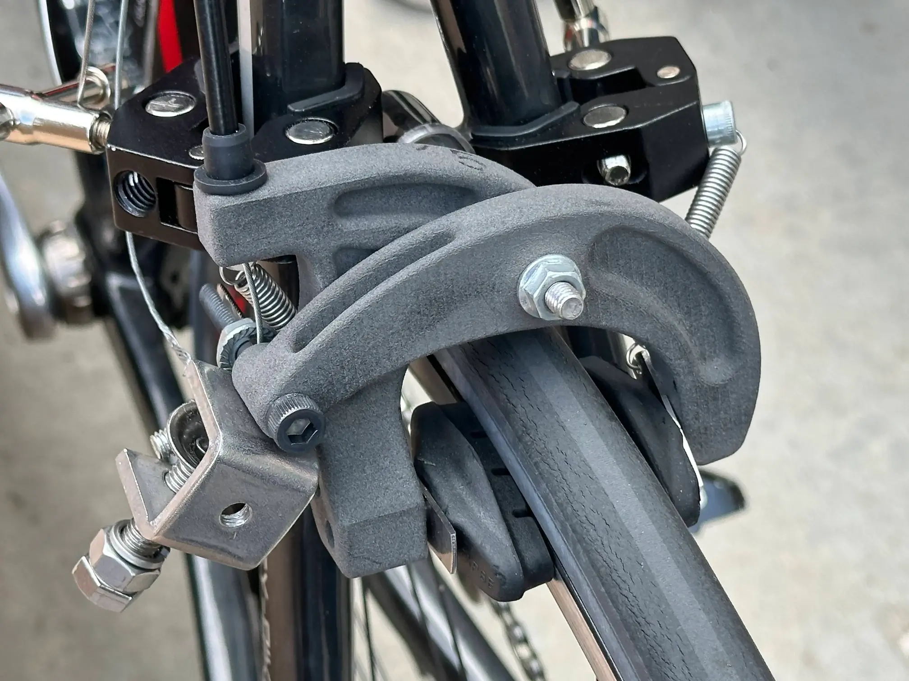
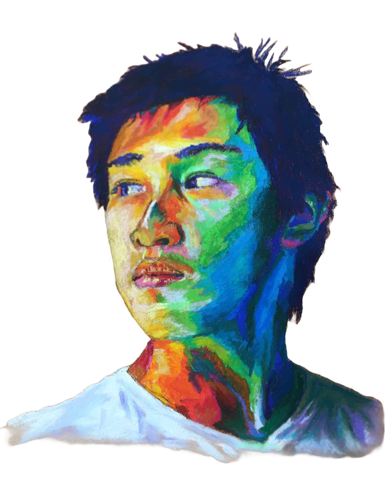
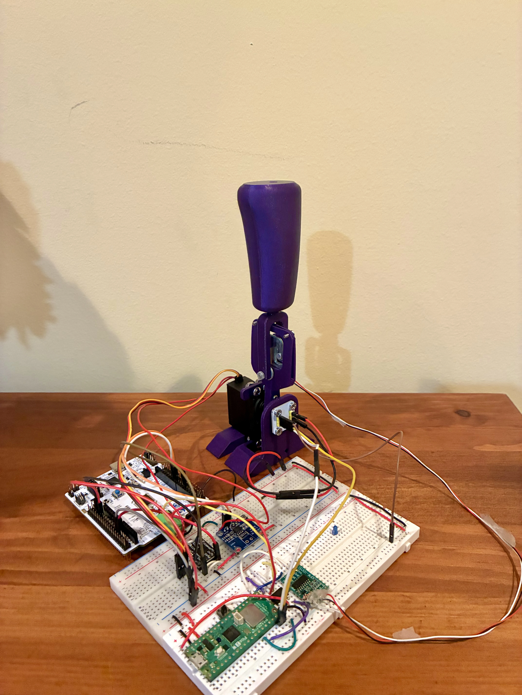
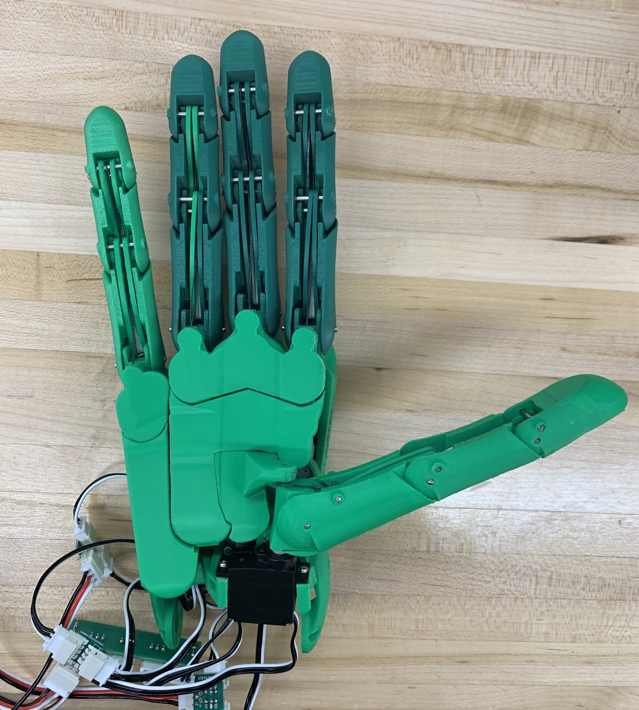
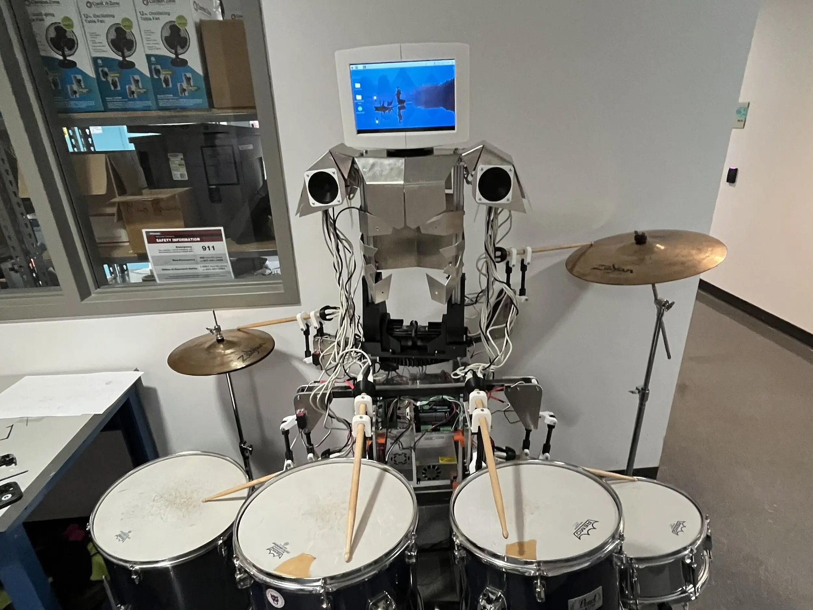
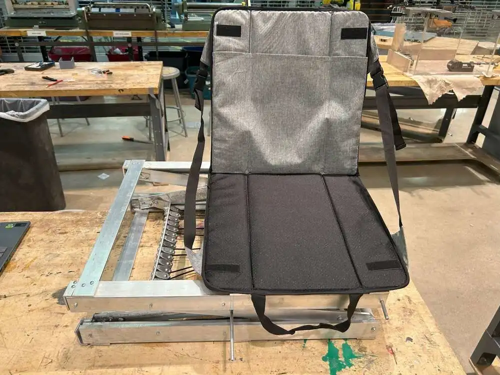
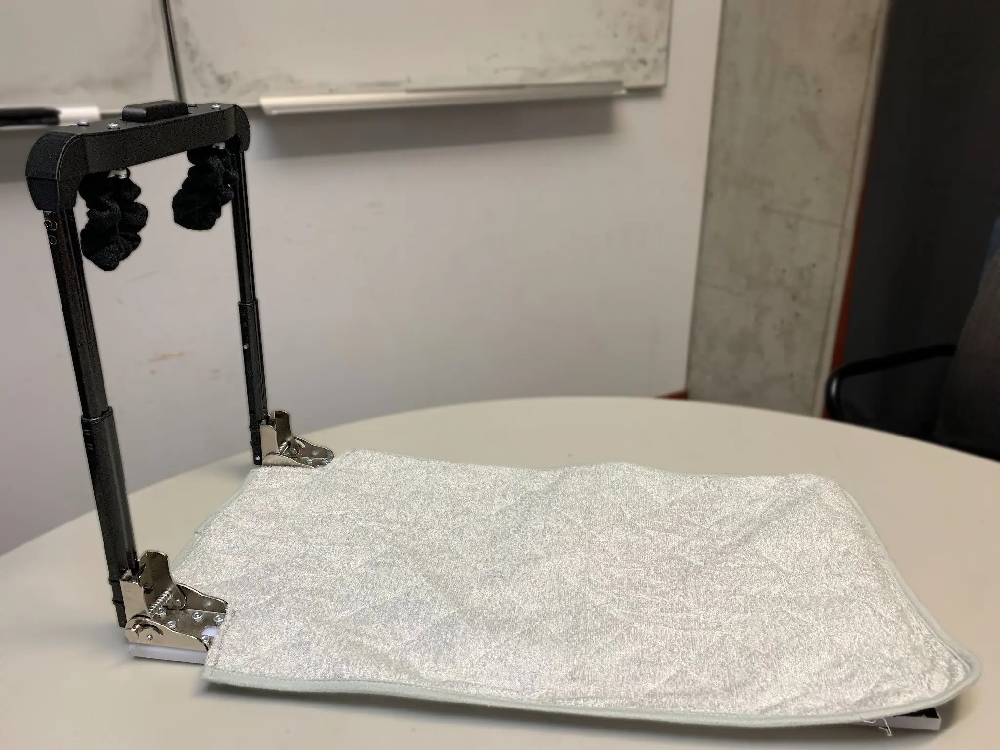

Brake Caliper
Designed and optimized a lightweight bicycle brake caliper to meet ISO braking standards.
An undergraduate junior studying Mechanical Engineering at Northwestern University, with a concentration in Robotics. Also pursuing a Kellogg Certificate in Managerial Analytics.

Hi there, I’m Chenchen!
Born and raised in Lake County, IL, with a healthy dose of science fiction and drawing, I came to love imagining things and bringing them to life. And at the center of it all was robotics.
Transformers, mech-suits, you name it, I fell in love with the idea of building machines that move and react. This interest has since led me to build robotic hands at HAND ERC, design music-playing robots for Northwestern’s Robotics Club, and pursue mechanical engineering more broadly. As a Disposables Engineering Intern at Fresenius Kabi USA, I’ve come to value how my interests can be directed towards things that meaningfully impact people’s lives, particularly in fields like medtech.
Outside of engineering, my love to imagine and create still shines through my hobbies, such as drawing, creative writing, and music. I’m actually the bassist in NURC’s robotic band… until the bass robot is complete, that is. I hope to keep combining creativity and engineering to drive meaningful innovation and help others.

Designed and optimized a lightweight bicycle brake caliper to meet ISO braking standards.

Created a 1 DOF haptic joystick that renders virtual forces to the user's hand.

Redesigned and built an open-source robotic hand as a test platform for novel tactile sensors.

Designed and integrated mechanical components for robotic drummer.

Designed a portable, electronic-free lifting device to help a stroke survivor recover from falls.

Designed a one-handed diaper-changing station for patients with hemiplegia.